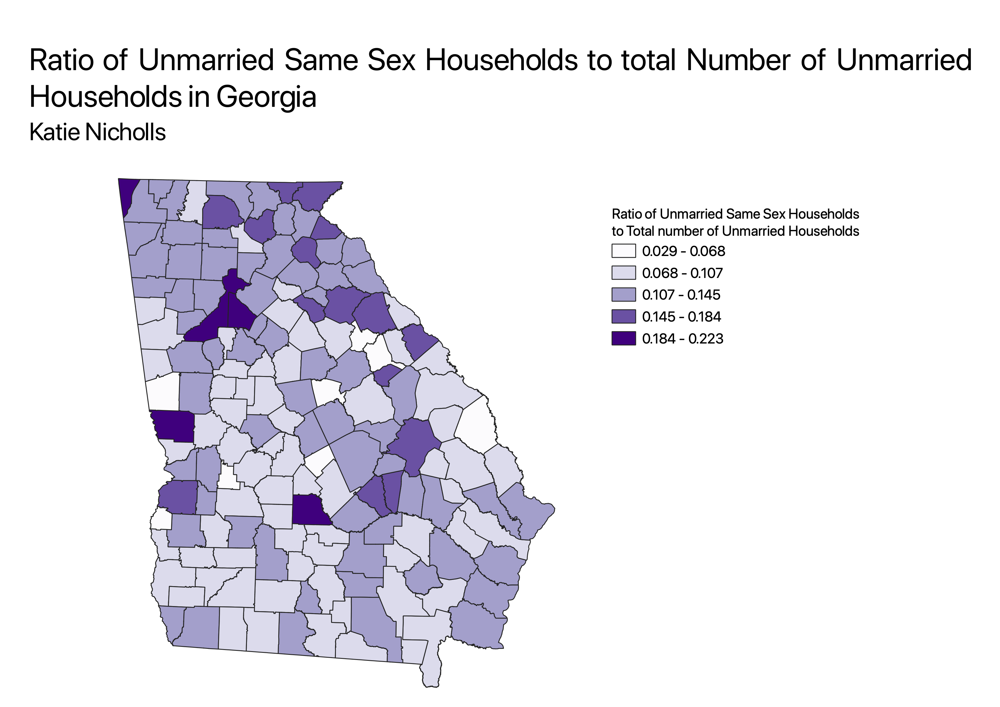
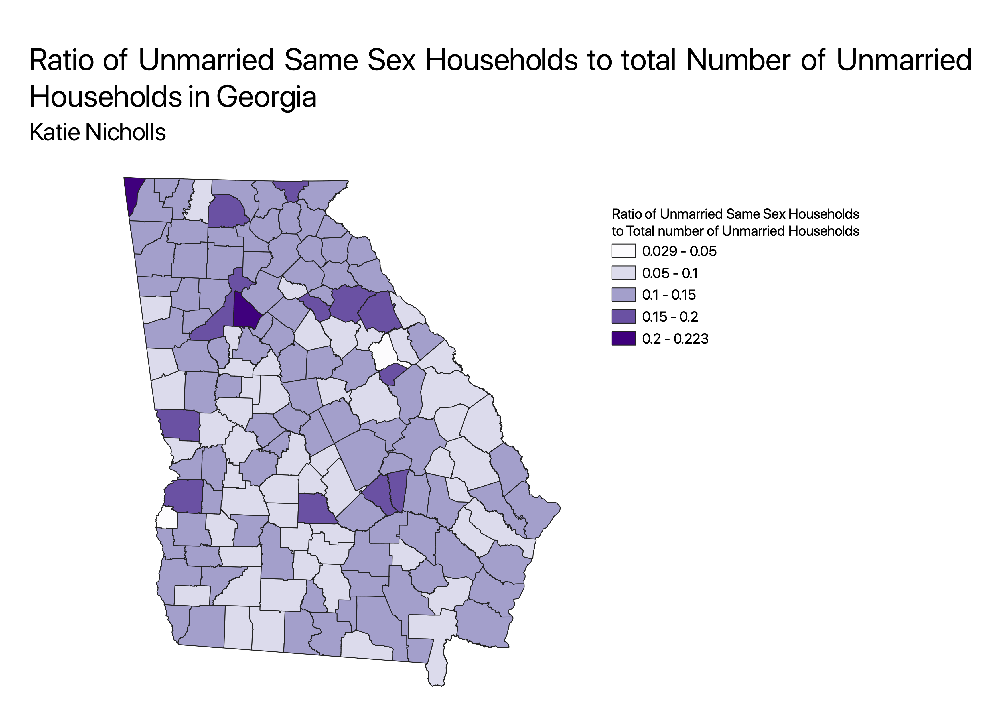
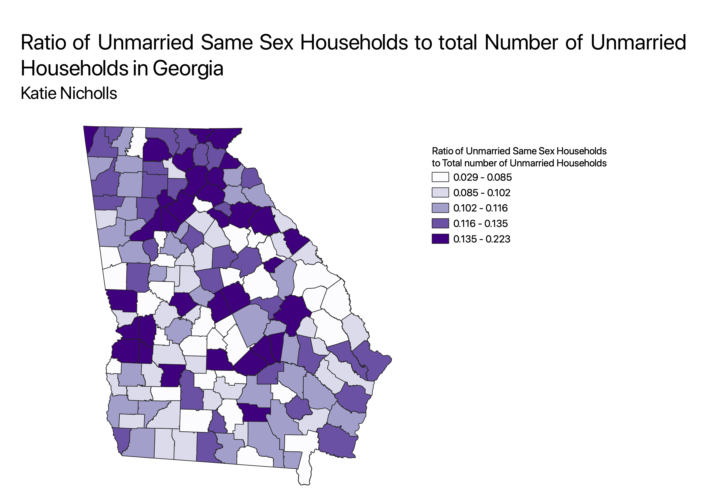

Homework 6 part 2: Census data choropleth with a ratio
Katie Nicholls
Using Data available from the 2000 US census, I made a map that shows the percentage of the population that is above the age of 25 and has a bachelor's degree or higher for each county in the state of Georgia.
Choropleth with Equal Interval Classes

Choropleth with "Pretty Break" Classes

Choropleth with Equal Quantile Classes

Data used for this project
CSV dataset
Link to shapefile